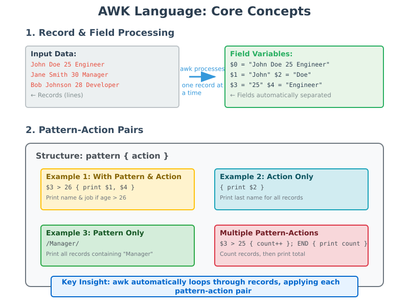
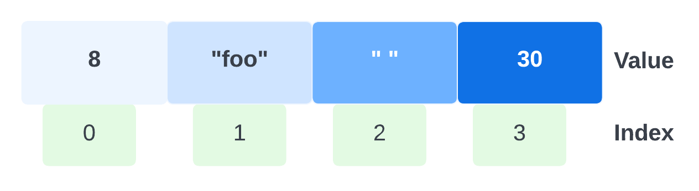
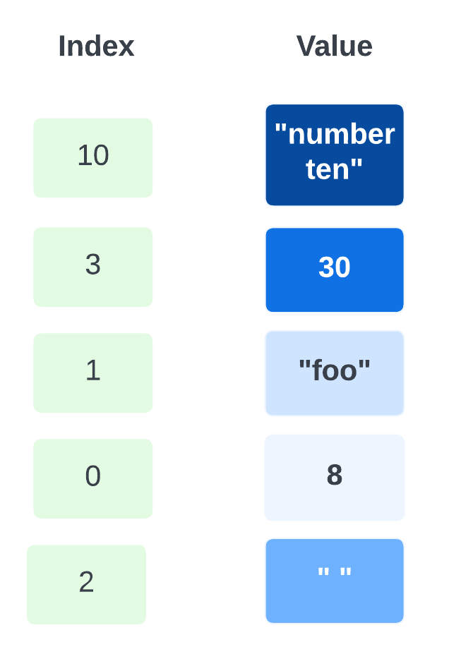

Inspecting and Manipulating Text Data with Unix Tools - Part 3¶
Lesson Objectives
- Use specialised language
awkto do a variety of text-processing tasks - Quick overview of
bioawk(an extension ofawkto process common biological data formats)
{kind=link}
Aho, Weinberger, Kernighan = AWK¶
Introduction to AWK
1. WHAT IS AWK & WHAT CAN WE DO WITH IT?¶
Awk is a scripting language used for manipulating data and generating reports. The awk command programming language requires no compiling and allows the user to use variables, numeric functions, string functions, and logical operators. Awk is mostly used for pattern scanning and processing. It searches one or more files to see if they contain lines that match with the specified patterns and then perform the associated actions.
- Transform data files
- Automation
- Produce formatted reports
2. Core Concepts - The Foundation¶
There are two key parts for understanding the Awk language: how Awk processes records, and pattern-action pairs. The rest of the language is quite simple.
- Awk processes input data a record (line) at a time. Each record is composed of fields (column entries) that Awk automatically separates. Awk assigns the entire record to the variable $0, field one's value to $1, field two's value to $2, etc.
- We build Awk programs using one or more of the following structures:
pattern { action }. Each pattern is an expression or regular expression pattern. In Awk lingo, these are pattern-action pairs and we can chain multiple pattern-action pairs together (separated by semicolons). If we omit the pattern, Awk will run the action on all records. If we omit the action but specify a pattern, Awk will print all records that match the pattern
{kind=link}
3. Basic Syntax¶
-
'selection_criteria {action}': This is the core part of the awk command where you define:selection_criteria: Conditions that determine which lines or records in the input file are processed. The selection criteria can be any validawkexpression that evaluates to true or false. Some common examples include:action: Operations to perform on the selected lines or records. .i.e. The action is a block of code enclosed in{}that specifies what to do with the selected lines
4. How AWK Operations works¶
- Scans a file line by line
- Splits each input line into fields
- Compares input line/fields to pattern
- Performs action(s) on matched lines
- If no action is specified, AWK prints the matching line by default
5. Programming Constructs Available:¶
- Format output lines
- Arithmetic and string operations
- Conditionals and loops
Understanding awk's Default Behavior¶
Default behaviour of awk is to print every line of data from the specified file. .i.e. mimics cat
Practical Examples for Bioinformatics¶¶
Beginner (B)¶
B-Example 1: Print lines which match the given pattern
B-Example 2: awk can be used to mimic functionality of cut : Following command is useful for extracting specific columns from a tabular file, which is a common operation in data processing and bioinformatics workflows.
$2: This refers to the second field (column) of the current line."\t": This adds a tab character between the output fields. ( Refer to Special meanings of certain escaped characters in supplementary )$3: This refers to the third field (column) of the current line.
Here, we’re making use of Awk’s string concatenation. Two strings are concatenated if they are placed next to each other with no argument. So for each record, $2"\t"$3 concatenates the second field, a tab character, and the third field. However, this is an instance where using cut is much simpler as the equivalent of above is cut -f 2,3 example.bed
B-Example 3: awk can be used to print the line numbers, which can be an extremely useful code snippet so that you can quickly know the column number(s) of what you want to extract out with cut or awk
Earlier, we saw this bit of code that allowed us to replace tabs with new lines (so that we could count how many columns we have in a file by piping into wc -l)
We can pipe this into awk '{print NR $0'}' to now append line numbers to the output:
NRmeans the current record (line) number that awk is processing. It starts at 1 and increments with each line read.$0means the entire current record (the whole line), exactly as read from input - as opposed to $1, $2, etc., which refer to individual fields within that line.
Intermediate (I)¶
awk Comparison and Logical operations - AWK provides a set of comparison (relational) operators to compare numbers or strings, and to match patterns. These are used to filter data or control the flow of actions in AWK scripts. The main comparison operators are
- Comparisons can be numeric or string-based, depending on the data type of the operands.
- The
~and!~operators are used for regular expression matching.
| Comparison | Description |
|---|---|
a + b |
a plus b |
a - b |
a minus b |
a * b |
a times b |
a / b |
a divided by b |
a % b |
a modulo b (remainder of division) |
a ^ b |
a raised to the power of b |
a == b |
a is equal to b |
a == b |
a is equal to b |
a != b |
a is not equal to b |
a < b |
a is less than b |
a > b |
a is greater than b |
a <= b |
a is less than or equal to b |
a >= b |
a is greater than or equal to b |
a ~ b |
a matches regular expression pattern b |
a !~ b |
a does not match regular expression pattern b |
a && b |
logical a and b |
a || b |
logical OR between a and b — true if either a is true, or b is true, or both are true |
!a |
not a (logical negation) |
I-Example 1: AWK can perform arithmetic directly in patterns : Suppose you want to output only the lines where the chromosome length is greater than 18
$3: This refers to the third field (column) of the current line.$2: This refers to the second field (column) of the current line.$3 - $2: This calculates the difference between the third and second fields.- Space on either side of
-is not important but leaving a space makes it easy to read
- Space on either side of
> 18: This checks if the difference is greater than 18.
Why is this useful ?
- Filtering Genomic Regions by Length:
- In a BED file, the second and third columns typically represent the start and end positions of genomic regions. This command can filter out regions that are shorter than a specified length (in this case, 18 base pairs).
- Quality Control: When working with genomic data, you might want to exclude very short regions that could be artifacts or less reliable. This command helps in maintaining the quality of your dataset by keeping only those regions that meet a minimum length criterion.
- Data Reduction: If you have a large dataset and are only interested in longer regions, this command can help reduce the size of the dataset, making subsequent analyses faster and more manageable.
- Custom Analysis: In some analyses, you might be specifically interested in longer genomic regions due to their biological significance. This command allows you to focus on those regions directly.
Example Scenario
Imagine you are analyzing ChIP-Seq data to identify binding sites of a transcription factor. You might want to filter out very short binding sites to focus on more substantial binding events. The command can help you achieve this:
I-Example 2: We can also chain patterns, by using logical operators && (AND), || (OR), and ! (NOT). For example, if we wanted all lines on chromosome 1 with a length greater than 10:
- First pattern,
$1 ~ /chromosome1specifies the regular expression (All Regular expressions are in slashes). We are matching the first field,$1against the regular expressionchromosome1. - Tilde
~means match. - To do the inverse of match, we can use
!~OR!($1 ~ /chromosome1/)
Built-In Variables and special patterns In Awk
Awk’s built-in variables include the field variables $1, $2, $3, and so on ($0 is the entire line) — that break a line of text into individual words or pieces called fields.
-
Control Variables - Some built-in variables are used to control how awk operates.
FS(field separator): contains the field separator character which is used to divide fields on the input line. The default is “white space”, meaning space and tab characters. FS can be reassigned to another character (typically in BEGIN) to change the field separator.OFS( Output field separator): stores the output field separator, which separates the fields when Awk prints them. The default is a blank space. Whenever print has several parameters separated with commas, it will print the value of OFS in between each parameter.RS(Record Separator): stores the current record separator character. Since, by default, an input line is the input record, the default record separator character is a newline.ORS(Output record separator ): stores the output record separator, which separates the output lines when Awk prints them. The default is a newline character. print automatically outputs the contents of ORS at the end of whatever it is given to print.
-
Information Variables - : These variables provide information about the current state of the program:
NR(Number of records): keeps a current count of the number of input records. Remember that records are usually lines. Awk command performs the pattern/action statements once for each record in a file.NF(Number of fields): keeps a count of the number of fields within the current input record.FNR(File Number of Records): Keeps track of the number of records read from the current input file.FILENAME: Contains the name of the current input file being processed.
Also, there are two special patterns BEGIN & END - These special patterns enable more complex and flexible data processing workflows by allowing actions to be tied to specific conditions and stages of the input processing cycle
BEGIN {action}- specifies what to do before the first record is read in. Useful to initialise and set up variablesEND {action}- what to do after the last record's processing is complete. Useful to print data summaries at the end of file processing
I-Example 3: We can use NR to extract ranges of lines, too; for example, if we wanted to extract all lines between 3 and 5 (inclusive):
'NR >= 3 && NR <= 5': This is the selection criteria used by awk to determine which lines to process. Let's dissect this part further:
NR: This is a built-in variable in awk that stands for "Number of Records." It keeps track of the current line number in the input file.>= 3: This means "greater than or equal to 3."&&: This is the logical AND operator.<= 5: This means "less than or equal to 5.
Why is this useful ?
- Extract a specific subset of lines from a larger file
- Perform operations on a range of lines in a file
- Debug or inspect specific portions of a large dataset
- It's commonly used in bioinformatics (as the .bed file extension suggests) and other fields where processing specific sections of large datasets is necessary.
Advanced (A)¶
A-Example 1: suppose we wanted to calculate the mean feature length in example.bed. We would have to take the sum of feature lengths, and then divide by the total number of features (records). We can do this with:
Explain please
'BEGIN{s = 0};BEGIN{}: This block is executed before any input lines are read.s = 0: Initializes a variable s to 0. This variable will be used to accumulate the sum of differences between the third and second columns.
{s += ($3-$2)};- {}: This block is executed for each input line.
s += ($3-$2): For each line, it calculates the difference between the third field ($3) and the second field ($2) and adds this difference to the variables.
-
END{ print "mean: " s/NR};END{}: This block is executed after all input lines have been read.print "mean: " s/NR: Prints the mean of the differences calculated. s is the sum of all differences, and NR (Number of Records) is the total number of lines read. So,s/NRgives the mean difference.
-
Purpose of
{}(Curly Braces)- Curly braces
{}enclose the action part of an AWK pattern-action statement. - The action inside
{}is executed when the pattern (or special block likeBEGINorEND) is matched or triggered
- Curly braces
-
Purpose of
;(Semicolon)- Semicolons
;in AWK separate multiple pattern-action statements when written on a single line. - They allow you to write several AWK rules in one command line, making the script concise.
- Semicolons
Summary - In this example, we’ve initialized a variable s to 0 in BEGIN (variables you define do not need a dollar sign). Then, for each record we increment s by the length of the feature. At the end of the records, we print this sum s divided by the number of records NR , giving the mean.
Why is this useful ?
- Genomic Feature Analysis: It quickly provides the average length of genomic features (e.g., genes, exons, or other annotated regions) in a BED file.
- Quality Control: It can be used to check if the features in your BED file have expected lengths, helping to identify potential errors or anomalies.
- Data Characterization: This simple statistic can give you a quick overview of the type of features in your file (e.g., short features like SNPs vs. longer features like genes).
- Comparative Analysis: You can use this command on multiple BED files to compare average feature lengths across different datasets or genomic regions.
- Preprocessing Step: Knowing the average feature length can be useful for downstream analyses or for setting parameters in other bioinformatics tools.
- Efficiency: It processes the entire file in a single pass, making it efficient for large genomic datasets.
- Flexibility: The command can be easily modified to calculate other statistics or to handle different file formats with similar structures
awk makes it easy to convert between bioinformatics files like BED and GTF. Can you generate a three-column BED file from Mus_muscu‐lus.GRCm38.75_chr1.gtf: ?
- Follow this link for a quick recap on annotation formats
-
Note that the start site of features in the .bed file is 1 less than the start site of features in the .gtf file: .bed uses 0-indexing (first position is numbered 0.) and .gtf uses 1-indexing (first position is numbered 1) .i.e. "chr 1 100" in a GTF/GFF is "chr 0 100" in BED
-
Let's build the command based on
awk options 'selection_criteria {action}' input-file- What is the
selection_criteria? ( hint- it evolves around a symbol. ) - There is a possibility of needing the "inverse of match" function in
awkhere which can be invoked with! - For
{action}, we will need the field IDs of the three columns. Based on pre-existing knowledge of annotation formats, it will be feild 1, 4 and 5. Don't foget the above note on 0 vs 1 indexing of start site
- What is the
Help !
Explain......
'!/^#/ { print $1 "\t" $4-1 "\t" $5}'!/^#/: This is a pattern that matches lines that do not start with the # character. The^symbol represents the start of a line, and#is the character to match. The!negates the match, so this pattern matches lines that do not start with#.
{ print $1 "\t" $4-1 "\t" $5}This action block is executed for each line that matches the pattern (i.e., lines that do not start with#).print $1: Prints the first field of the line."\t": Inserts a tab character.$4-1: Prints the value of the fourth field minus 1."\t": Inserts another tab character.$5: Prints the fifth field of the line.
Optional (Advanced) - awk also has a very useful data structure known as an associative array. Associative arrays behave like Python’s dictionaries or hashes in other languages. We can create an associative array by simply assigning a value to a key.
For example, suppose we wanted to count the number of features (third column) belonging to the gene “Lypla1.” We could do this by incrementing their values in an associative array:
awk '/Lypla1/ {feature[$3] += 1}; END {for (k in feature) print k "\t" feature[k]}' Mus_musculus.GRCm38.75_chr1.gtf
Quick Intro to Arrays
The awk language provides one-dimensional arrays for storing groups of related strings or numbers. Every awk array must have a name. Array names have the same syntax as variable names; any valid variable name would also be a valid array name. But one name cannot be used in both ways (as an array and as a variable) in the same awk program.
Arrays in awk superficially resemble arrays in other programming languages, but there are fundamental differences. In awk, it isn’t necessary to specify the size of an array before starting to use it. Additionally, any number or string, not just consecutive integers, may be used as an array index.
In most other languages, arrays must be declared before use, including a specification of how many elements or components they contain. In such languages, the declaration causes a contiguous block of memory to be allocated for that many elements. Usually, an index in the array must be a nonnegative integer. For example, the index zero specifies the first element in the array, which is actually stored at the beginning of the block of memory. Index one specifies the second element, which is stored in memory right after the first element, and so on. It is impossible to add more elements to the array, because it has room only for as many elements as given in the declaration. (Some languages allow arbitrary starting and ending indices—e.g., ‘15 .. 27’—but the size of the array is still fixed when the array is declared.)
A contiguous array of four elements might look like below, conceptually, if the element values are eight, "foo", "", and 30.
{kind=link}

Only the values are stored; the indices are implicit from the order of the values. Here, eight is the value at index zero, because eight appears in the position with zero elements before it.
Arrays in awk are different—they are associative. This means that each array is a collection of pairs—an index and its corresponding array element value:
{kind=link}

The pairs are shown in jumbled order because their order is irrelevant
One advantage of associative arrays is that new pairs can be added at any time. For example, suppose a tenth element is added to the array whose value is "number ten". The result is:
{kind=link}

Now the array is sparse, which just means some indices are missing. It has elements 0–3 and 10, but doesn’t have elements 4, 5, 6, 7, 8, or 9.
It’s worth noting that there’s an entirely Unix way to count features of a particular gene: grep , cut , sort , and uniq -c
However, if we needed to also filter on column-specific information (e.g., strand), an approach using just base Unix tools would be quite messy. With Awk, adding an additional filter would be trivial: we’d just use && to add another expression in the pattern.
Optional - bioawk¶
bioawk is an extension of awk, adding the support of several common biological data formats, including optionally gzip'ed BED, GFF, SAM, VCF, FASTA/Q and TAB-delimited formats with column names. It also adds a few built-in functions and a command line option to use TAB as the input/output delimiter. When the new functionality is not used, bioawk is intended to behave exactly the same as the original awk.
The original awk requires a YACC-compatible parser generator (e.g. Byacc or Bison). bioawk further depends on zlib so as to work with gzip'd files.
YACC
A parser generator is a program that takes as input a specification of a syntax, and produces as output a procedure for recognizing that language. Historically, they are also called compiler-compilers. YACC (yet another compiler-compiler) is an LALR(LookAhead, Left-to-right, Rightmost derivation producer with 1 lookahead token) parser generator. YACC was originally designed for being complemented by Lex.
- Lex (A Lexical Analyzer Generator) helps write programs whose control flow is directed by instances of regular expressions in the input stream. It is well suited for editor-script type transformations and for segmenting input in preparation for a parsing routine.
bioawk features
- It can automatically recognize some popular formats and will parse different features associated with those formats. The format option is passed to
bioawkusing-c argflag. Hereargcan be bed, sam, vcf, gff or fastx (for both fastq and FASTA). It can also deal with other types of table formats using the-c headeroption. Whenheaderis specified, the field names will used for variable names, thus greatly expanding the utility.` - There are several built-in functions (other than the standard
awkbuilt-ins), that are specific to biological file formats. When a format is read withbioawk, the fields get automatically parsed. You can apply several functions on these variables to get the desired output. Let’s say, we read fasta format, now we have$nameand$seqthat holds sequence name and sequence respectively. You can use theprintfunction (awkbuilt-in) to print$nameand$seq. You can also usebioawkbuilt-in with theprintfunction to get length, reverse complement etc by using'{print length($seq)}'. Other functions includereverse,revcomp,trimq,and,or,xoretc.
Variables for each format
For the -c you can either specify bed, sam, vcf, gff, fastx or header. bioawk will parse these variables for the respective format. If -c header is specified, the field names (first line) will be used as variables (spaces and special characters will be changed to under_score).
| bed | sam | vcf | gff | fastx |
|---|---|---|---|---|
| chrom | qname | chrom | seqname | name |
| start | flag | pos | source | seq |
| end | rname | id | feature | qual |
| name | pos | ref | start | comment |
| score | mapq | alt | end | |
| strand | cigar | qual | score | |
| thickstart | rnext | filter | filter | |
| thickend | pnext | info | strand | |
| rgb | tlen | group | ||
| blockcount | seq | attribute | ||
| blocksizes | qual | |||
| blockstarts |
bioawk is not a default linux/unix utility. .i.e. Has to be installed. This is available as a module on NeSI HPC platforms which can be loaded with
The basic idea of Bioawk is that we specify what bioinformatics format we’re working with, and Bioawk will automatically set variables for each field (just as regular Awk sets the columns of a tabular text file to $1, $1, $2, etc.). For Bioawk to set these fields, specify the format of the input file or stream with -c. Let’s look at Bioawk’s supported input formats and what variables these formats set:
code
bed: 1:chrom 2:start 3:end 4:name 5:score 6:strand 7:thickstart 8:thickend 9:rgb 10:blockcount 11:blocksizes 12:blockstarts sam: 1:qname 2:flag 3:rname 4:pos 5:mapq 6:cigar 7:rnext 8:pnext 9:tlen 10:seq 11:qual vcf: 1:chrom 2:pos 3:id 4:ref 5:alt 6:qual 7:filter 8:info gff: 1:seqname 2:source 3:feature 4:start 5:end 6:score 7:filter 8:strand 9:group 10:attribute fastx: 1:name 2:seq 3:qual 4:comment
As an example of how this works, let’s read in example.bed and append a column with the length of the feature (end position - start position) for all protein coding genes:
code
bioawk -c gff '$3 ~ /gene/ && $2 ~ /protein_coding/ {print $seqname,$end-$start}' Mus_musculus.GRCm38.75_chr1.gtf | head -n 4
Bioawk is also quite useful for processing FASTA/FASTQ files. For example, we could use it to turn a FASTQ file into a FASTA file:
code
Note that Bioawk detects whether to parse input as FASTQ or FASTA when we use -c fastx.
Bioawk can also serve as a method of counting the number of FASTQ/FASTA entries: